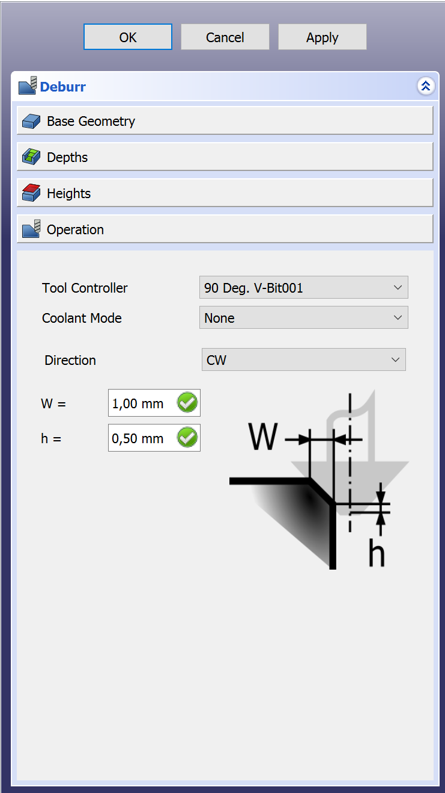

CAM Ébavurage
 CAM Ébavurage
CAM Ébavurage
- Menu location
-
- Workbenches
- Default shortcut
-
None
- Introduced in version
-
0.18
- See also
-
None
Description
L’outil  Ébavurage sert principalement à ébavurer un bord.
Ébavurage sert principalement à ébavurer un bord.
Options
Après avoir sélectionné la géométrie dans la section Géométrie de base du panneau de tâches, vous pouvez appuyer sur Appliquer pour voir le parcours de l’outil tel que défini par les options par défaut.
Ensuite, vous pouvez vérifier vos profondeurs et hauteurs, comme avec les autres commandes du parcours.
La dernière étape consiste à activer la section Opération où vous pouvez spécifier ce qui suit :
-
Commande d’outil : sélectionnez l’outil à utiliser.
-
Mode de refroidissement : sélectionnez
Aucun,JetouBrouillard. -
Directions : sélectionnez
Sens horaire(CW) ouSens anti-horaire(CCW). -
W : dimension de votre arête.
-
h : décalage par rapport au bas de l’outil. Il s’agit d’un dispositif de sécurité car si la pointe dépasse le bord, l’outil ne coupera plus.
::

Propriétés
Données
-
Placement :
-
Label : nom d’utilisateur de l’objet (UTF-8)
-
Direction :
CCWouCW. -
Entry Point : point d’entrée de l’opération, s’il est défini à 2, il ira dans 2 coins par rapport à la valeur par défaut.
-
Extra depth : profondeur supplémentaire (h dans le panneau de tâches).
-
Join : comment joindre les segments de chanfrein,
RoundouMiter. -
Side : le côté de l’opération,
OutsideouInside. -
Width : largeur du chanfrein (W dans le panneau des tâches).
-
Clearance Height : hauteur nécessaire pour dégager les brides et les obstructions (définie par défaut à
OpStockZMax + SetupSheet.ClearanceHeightOffset). -
Safe Height : hauteur au-dessus de laquelle les mouvements rapides sont autorisés. (définie à
OpStockZMax + SetupSheet.SafeHeightOffset). -
Start Depth : profondeur de départ de l’outil, première profondeur de coupe en Z.
-
Step Down : pas de descente incrémentale de l’outil
-
Op Stock ZMax : valeur Z maximale du brut.
-
Op Stock ZMin : valeur Z minimale du brut.
-
Op Tool Diameter : diamètre de l’outil.
-
Active : mis à
false, pour empêcher l’opération de générer du code. -
Base : géométrie de base pour cette opération, des arêtes ou une face.
-
Comment : commentaire facultatif pour cette opération.
-
Coolant Mode : mode de refroidissement pour cette opération.
-
Cycle Time : durée estimée du cycle pour cette opération.
-
Tool Controller : contrôleur d’outil qui sera utilisé pour calculer le parcours.
-
User Label : étiquette attribuée par l’utilisateur.